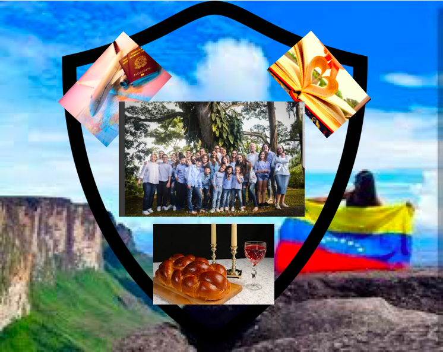

Mi abuela Elena es la mujer más tranquila que conozco. Eso era lo que quería expresar al crear un escudo que la represente. Amante de los paisajes, enamorada de su país natal. Eso explica el fondo del escudo, un paisaje que quita el aliento cuando lo miras y que por supuesto pertenece al país que ella tanto ama. Un don que ella tiene, es que nos hace sentir a cada uno de los que formamos parte de su familia que somos prioridad para ella. Por eso la foto familiar en el centro, sin ser ella el foco de esta. Ella se oculta entre la familia, evitando ser el centro de atención, sin embargo, representando la piedra fundamental de todos nosotros. Debajo de la foto se divisa la imagen de la Jalá, las velas y el vino, símbolos directos de lo que representa el Shabbat y las festividades judías. Mi abuela se esmera para que cada shabat, y cada festividad la disfrutemos y nos reunamos toda su familia. En la parte superior del escudo coloqué dos cosas que mi abuela Elena ama hacer; el avión a mano izquierda representa viajar, eso es lo que más le gusta, quiere viajar y ver nuevos paisajes, pues es así (creo yo) que se conecta con D-os. Y en la parte superior derecha está la imagen de un libro, en las que sus páginas se juntan para formar un corazón. Creo que mejor explicada gráficamente no podría estar esta fotografía. Eso es lo que ella siente por la lectura. Por eso es una mujer tan culta!! Esa es mi abuela para mí: serena, amorosa, inteligente y dedicada a su familia. |